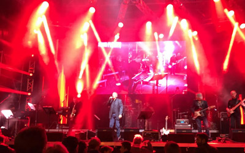

See SimplyRock: www.simplyrock.eu


LIKE our Facebook page: www.facebook.com/simplyrock.eu,
to stay up to date on our live concerts and see our videos and photos.
ABOUT US
SimplyRock is a band consisting of eight skilled musicians and a sound engineer
Tributo a Joe Cocker, la più grande voce del blues/rock britannico

An engaging show
SimplyRock: SimplyRock is a band consisting of eight skilled musicians and a sound engineer, most of them professional musicians, and it represents one of the leading tribute bands to Joe Cocker, the greatest voice of British blues/rock.
A JOURNEY WITH JOE COCKER: The resemblance of Claudio with Joe Cocker, makes the show even more realistic and close to the atmosphere of Joe's latest concerts.
FAMOUS SONGS: In our concerts we play some of the most beautiful songs of the history of international music, from "Unchain my heart" to "You can leave your hat on", "Up where we belong", famous movie soundtracks. Joe Cocker's covers enhanced their original songs, sometimes obscuring them, as in the case of With Beatles "With a little help from my friends", made famous by Joe since the Woodstock concert in 1969.
JOE COCKER'S ORIGINAL BAND MUSICIANs: Some of the musicians from the original Joe Cocker band (see photos and movies) play with us on most important concerts. With them we have developed a good musical collaboration and a great friendship.
LIVE SHOW: An exciting show composed in its full version by 6 new computers that pilot lights, action backgrounds, real-time cameras with our live video and operators, live streaming on Facebook and YouTube.
MUSICIANS

Claudio 'Joe' Pioli
Very passionate about music and musical instruments, active for many years in the world of live concerts. With his experiences as a guitarist, singer and sound engineer has been, in the last 20 years in several musical pop/rock bands, international events (Italy, Switzerland, Belgium, East Europe). In his musical curriculum also events at RAI television.

Federica Gasperoni
Backing voice, the music has become her job. Certified Master Teacher Voicecraft, teacher at Music Academy and Sound School, she took place as singer and chorister in two musicals and national programs on RAI-2 and LA7 television. Previously backing voice of Andrea Mingardi, she worked with some major musical groups in genres ranging from jazz to pop to R'nB / soul.

Melena Jackson
Backing vocal, graduated in classic music and was an active partner of the Luciano Pavarotti School, in Modena. Her favorite kind of music are soul and blues. She is actually working with other bands in Modena area. Despite her studies, she has a real blues soul.

Nicola Milazzo
At the beginning of the '90s he became a guitarist of the songwriter GRAZIANO ROMANI with whom he also recorded a record at PSYCO STUDIO (MI), along with some hundred concerts, along with KURT CRESS (MEAT LOAF, SCORPIONS, TINA TURNER) CESAREO and FASO ELIO AND THE TESE STORIES), also opening several concerts, under the production of MASSIMO RIVA (ROSES VASCO, STEVE ROGERS BAND) with whom he also performed several live concerts.

Marco Berni
Professional musician, he plays piano and keyboards with a depth knowledge of sounds and effects. He teaches music in the province of Modena and he has many live experiences in different musical genres: from jazz to pop, to Rock / Blues.

Daniele Bgani
Daniele Bagni (Barny) Bass guitar, played live in many international shows and recorded in studio with some famous Italian Artists and Bands. With Litfiba, and Ladri di Biciclette he played live at festival di San Remo and other important concerts. He worked in recording studios with some famous international artists: Vinnie Colaiuta (Sting, Anastacia, Ramazotti ecc), Alfredo Golino, Paul Gilbert…
Cesare Barbi
His professional skills join the english pop, funky and R & B pop in a dynamic mix of engagement. His curriculum includes active collaborations and many live shows with some of the most important Italian artists such as Ladri di Bicilclette, Ridillo, Rio, Cesare Cremonini, Ligabue and others.
Massimiliano Fischer
Professional musician for more than 15 years, he plays with several musical bands for live shows and recordings in the studio. He can play every possible accessory that produces sound (or noise). His percussions animate the groove in live concerts and make him the leading protagonist of the rhythmic base of the band.
Maurizio Frallicciardi
He plays the sax. Artistically skilled in Naples in 1989 as a self-made saxophonist. In 1990 he studied with Luciano Nini and he played in all the famous clubs of Neapolitan hinterland.His favourite kind of music are funk and acid jazz. In 2005 he moved to Reggio Emilia, and he attended seminars with musicians such as Joe Lovano, Jerry Bergonzi, Steve Grossman. He plays in som jazz/funk bands in Italy.
Federico Bianchi
Professional sound engineer, he is well known in technical circles of music, for his great experience with DiGiCo mixers, that led him to collaborate with Italian and international artists who perform in Italy and Switzerland. Here the photo in the studies of Ariston Theatre in Sanremo.
SIMPLE JOE & JOE COCKER ORIGINAL BAND MUSICIANS
Some of the musicians of the original Joe Cocker band, play sometimes with us on stage, as special guests. We are happy for this great musical collaboration and the good friendship.


{kind=link}
{kind=link}
{kind=link}
{kind=link}
{kind=link}
{kind=link}
LIVE SHOW


THE SHOW: SimplyRock takes care about all the parts of an engaging live concert, from music to scenes to live projections, to continue to bring in a professional way, in public squares or other events the beautiful songs of Joe Cocker, with the same feeling and the same atmosphere of his best years.
SPECIAL EFFECTS: An exciting show based on good music, best instruments, light effects, video backgrounds with our stage cameras mixed in real-time, live streaming on Facebook and YouTube, everything based on the most recent technologies.
LIVE VIDEO: The show in the main version includes, in addition to sounds and special effects, a dedicated video director, 13 real-time cameras (fixed or mobile), animated wallpapers, synchronized music videos for an engaging professional show.
To stay up to date on our live concerts and see our videos and photos LIKE our Facebook page:
www.facebook.com/simplyrock.eu
CONTACTS

Technical aspects for organizing events
Please contact us to agree about the technical aspects.
An engaging show
SimplyRock: SimplyRock is a band consisting of eight skilled musicians and a sound engineer, most of them professionals, and it represents one of the leading tribute bands to Joe Cocker, the greatest voice of British blues/rock.
JOURNEY WITH JOE COCKER: The resemblance of both Claudio physics and vocals with Joe Cocker, makes the show even more realistic and close to the atmosphere of Joe's latest concerts.
FAMOUS SONGS: In our concerts we play some of the most beautiful songs of the history of international music, from "Unchain my heart" to "You can leave your hat on", "Up where we belong", famous movie soundtracks. His songs inspired artists like Sugar, who told him: "Joe was my brother of blood of heart and soul." Joe Cocker's covers enhanced their original songs, sometimes obscuring them, as Joe did "With a little help from my friends", since the historical Woodstock concert in 1969.
JOE COCKER'S ORIGINAL BAND MUSICIANS: Some of the musicians from the original Joe Cocker band (see photos and movies) sometimes play with us on most important concerts. We developed with them a great musical collaboration and a good friendship.
LIVE SHOW: An exciting show, composed in its full version by 5 new computers that drive lights, action backgrounds, our live video with real time cameras, live streaming on Facebook and YouTube.